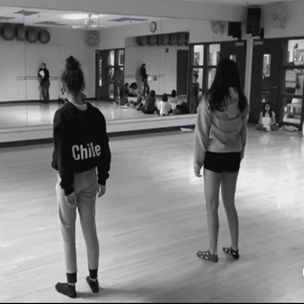
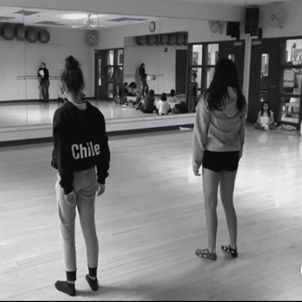

Jocelyne Garcia
My name is Jocelyne Garcia, I am 18 years old, and I am a first year Psychology major at UC Riverside. I grew up in the "818" San Fernando Valley, but decided to attend college in Riverside so I can further my education when it comes to the subject of Psychology. As a First Generation to immigrant parents, my studies and my academic life is really important to me due to the high expectations and standards my parents have set for me. I hope to master in Criminal Psychology someday, perhaps even Clinical Psychology.
My interest in Psychology began pretty young due to being exposed to certain experiences within myself and family. However, my interest in Criminal Psychology began later on due to crime shows I would watch. Aside from psychology, my other interests include dancing, shopping, and spending time with friends. My passion for dance has also played a big part in making me who I am and creating this therapeutic nature inside of me. Dance has brought so much release for me that at some point I even considered studying physical/ sport psychology so that I could embed two of my interests in one. My one and only job prior to college was working at Blaze Pizza. I worked as a crew member, meaning I was in charge of preparing pizzas. Even in a job like this, I had to deal with people which I think is one of my strong characteristics. I would always be assigned on Order Take or on Cash Register which I believe was because of my ability to communicate with other people well, a skill I believe is necessary in the Psychology field. I learned a lot from this job and I even miss the environment that it created for me as well as the coworkers I met during my time there. Blaze Pizza showed me that there is a possibility of liking your job and making the most of it. Which if I was able to find such comfort in a minimum wage job, I can only imagine what working in Psychology will be like for me.
As someone who has dealt with the harmful effects of mental illness, I want to help as many people as possible who have been in a similar position. I believe myself to be a huge Mental Health advocate and hope that in my studies, I will bring more attention to the psychological issues that are constantly normalized within our society. In order to someday succeed in my career I need to prepare myself for the years and workload to come. To do so, I will practice efficient study habits, prioritizing school over any possible distractions, and asking for help when needed. I believe that staying on the right track is something that will get me to my end goal, as well as something that has been heavily pushed onto me by my parents. I know that success itself is not a linear process, there are struggles and there are challenges I must overcome. But I believe that my passion for the subject of Psychology is so engraved into me that I will do whatever it takes to get to where I want to.
Experience
Dance Assistant
• Taught kids begginer ballet
• Created routines and taught it to them
• Led stretch and conditioning
• Practiced "across the floor" dance moves
Education
UC Riverside
Portfolio


